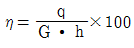
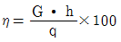
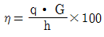
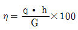
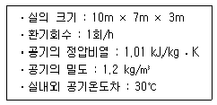
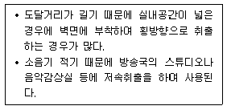
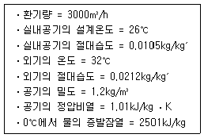
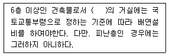
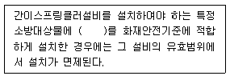
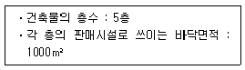

건축설비기사 (2014-09-20 기출문제)
1과목: 건축일반
1. 점광원으로 가정할 수 있는 평균 구면 광도 2,000cd의 램프의 반지름 1.5m인 원형 탁자 중심 바로 위 2m의 위치에 설치되어 있다. 이 탁자 모서리 끝 부분의 수평면 조도(lx)는?
- 128
- 256
- 384
- 512
(정답률: 67%)

2. 음(音)을 확산시키는 방법에 해당되지 않는 것은?
- 각기 다른 흡음처리를 불규칙하게 분포시킨다.
- 평행 대칭벽을 설치한다.
- 확산체의 크기는 확산효과를 기대할 수 있는 치수로 정한다.
- 흡음재와 반사재를 상호 분산배치한다.
(정답률: 60%)
3. 다음 용어의 단위로서 틀린 것은?
- 열전도율 : W/m ㆍ K
- 열전달율 : W/m2 ㆍ K
- 열관류율 : W/m3 ㆍ K
- 열용량 : J/K
(정답률: 83%)
4. 종합병원에서 클로즈드 시스템(closed system)의 외래진료부 계획에 대한 설명으로 옳지 않은 것은?
- 부속 진료시설을 인접하게 하여 이용이 편리하게 한다.
- 환자의 이용이 편리하도록 1층 또는 2층 이하에 둔다.
- 내과계통은 진료검사에 시간을 요하므로 소진료실을 다수 설치하는 것보다 대진료실을 1개 설치하는 것이 좋다.
- 실내환경에 대한 배려로서 환자의 심리고통을 덜어줄수 있는 환경심리적 요인을 반영시킨다.
(정답률: 88%)
5. 목재 등으로 하며 벽과 반자가 맞닿는 곳에 마무리와 장식을 겸하기 위한 부재는?
- 반자돌림대
- 달대받이
- 달대
- 반자틀
(정답률: 74%)
6. 단독주택의 이점을 최대한 살려 경계벽을 통해 주택영역을 구분한 것은?
- 타운 하우스
- 클럽 하우스
- 테라스 하우스
- 중정형 하우스
(정답률: 83%)
7. 주택 계획에 대한 설명으로 옳지 않은 것은?
- 복도면적은 일반적으로 전체면적의 20% 정도로 한다.
- 거실은 현관이나 식당, 부엌과 가깝고 전망이 좋은 곳에 위치하는 것이 좋다.
- 부부침실보다는 노인실이나 아동실을 우선적으로 좋은 위치에 두는 것이 바람직하다.
- 부엌은 저장, 준비와 세척, 조리를 위한 장소의 3부분을 연결하는 작업삼각형의 동선의 합이 6.6m 이상이면 비능률적이다.
(정답률: 66%)
8. 각종 비즈니스 여행자를 위한 호텔로 편리성과 능률성이 중요한 요소가 되며 도시 중심에 위치한 시티호텔은?
- 커머셜 호텔(Commercial Hotel)
- 레지덴셜 호텔(Residential Hotel)
- 아파트먼트 호텔(Apar tment Hotel)
- 터미널 호텔(Terminal Hotel)
(정답률: 70%)
9. 벽돌벽에 배관 ㆍ 배선, 기타용으로 그 층높이의 4/3 이상 연속되는 세로홈을 팔 때, 그 홈의 깊이는 벽두께의 최대 얼마 이하로 하는가?
- 1/2
- 1/3
- 1/4
- 1/5
(정답률: 57%)
10. 상점의 판매형식 중 대면판매의 특징에 대한 설명으로 옳은 것은?
- 상품이 손에 잡혀서 충동적 구매와 선택이 용이하다.
- 진열면적이 커지고 상품에 친근감이 간다.
- 일반적으로 양복, 침구, 전기기구, 서적, 운동용구점 등에서 쓰인다.
- 판매원이 정위치를 정하기가 용이하다.
(정답률: 77%)
11. 건물 바닥 전체가 기초판으로 된 기초 형식은?
- 독립 기초
- 복합 기초
- 온통 기초
- 연속 기초
(정답률: 87%)
12. 주거 계획의 기본 목표인 가사노동의 경감과 관계가 먼 것은?
- 설비를 좋게 하고 되도록 기계화한다.
- 평면상의 주부 동선이 단축되도록 한다.
- 능률이 좋은 부엌시설이나 가사실을 갖추도록 한다.
- 넓은 주거공간을 확보하여 생활의 쾌적함을 추구한다.
(정답률: 85%)
13. 학교운영방식에 관한 설명 중 U+V형과 V형의 중간이 되는 E형에 해당하는 것은?
- 교실의 수는 학급수와 일치하며, 각 학급은 스스로의 교실 안에서 모든 교과를 행한다.
- 학생의 이동이 비교적 많아 동선 및 소유물처리를 충분히 고려한다.
- 학급, 학생 구분을 없애고 학생들은 각자의 능력에 맞게 교과를 선택한다.
- 모든 교실이 특정 교과 때문에 만들어지며 일반교실은 없다.
(정답률: 69%)
14. 벽체나 지붕과 같은 구조체의 실외 쪽에 단열재를 설치하는 외단열의 장점에 대한 설명으로 옳지 않은 것은?
- 표면결로 및 내부결로의 방지에 유리하다.
- 열교(heat bridge)의 문제가 거의 발생하지 않는다.
- 단열재가 콘크리트를 감싸고 있어 콘크리트의 성능유지에 도움을 준다.
- 강당이나 집회장과 같이 간헐난방을 하는 곳에서는 단시간에 난방효과를 얻을 수 있다.
(정답률: 74%)
15. 벽돌 쌓기에서 공간 쌓기를 하는 가장 중요한 목적으로 옳은 것은?
- 방청
- 방습
- 방화
- 내화
(정답률: 81%)
16. 실내에 있는 사람이 느끼는 온열감각에 영향을 미치는 물리적 열환경 요소를 조합한 것으로 옳은 것은?
- 열관류율, 열전도, 대류열, 복사열
- 온도, 습도, 기류, 복사열
- 온도, 습도, 기류, 대류열
- 열관류율, 열전도, 기류, 복사열
(정답률: 87%)
17. 목조 건축물을 내풍적(耐風的)으로 하는데 가장 중요한 것은?
- 멍에의 간격을 적절히 배치한다.
- 벽체재료의 단면을 크게 한다.
- 토대를 앵커 볼트로 긴결한다.
- 가새를 유효하게 배치한다.
(정답률: 64%)
18. SRC(철골철근콘크리트)조에 대한 설명으로 옳지 않은 것은?
- 철근콘크리트구조보다 내진성이 우수하다.
- 철골구조에 비해 거주성이 좋으며, 내화적이다.
- 철근콘크리트구조보다 건물의 중량을 크게 감소시킬수 있다.
- 철골부분은 H형강이 많이 쓰인다.
(정답률: 77%)
19. 학교의 조명계획에서 소요 조도값이 가장 낮은 곳은?
- 실험실
- 식당
- 계단
- 체육관
(정답률: 85%)
20. 상점을 계획할 때 고려할 사항으로 옳지 않은 것은?
- 종업원의 동선은 가능한 길게 하고, 고객의 동선은 가능한 짧게 한다.
- 심리적인 저항을 배제하는 방향으로 매장을 계획한다.
- 외관이 고객에게 좋은 인상을 주도록 한다.
- 상점내의 동선을 원활하게 한다.
(정답률: 89%)
2과목: 위생설비
21. 주철관의 이음 방법에 속하지 않는 것은?
- 소켓이음
- 빅토릭이음
- 타이톤이음
- 스위블이음
(정답률: 71%)
22. 중앙식 급탕방식의 설계상 유의사항으로 옳지 않은 것은?
- 각 계통 및 지관의 순환유량이 균등하게 되도록 한다.
- 수평배관의 길이가 가능한 한 길게 되도록 수직관을 배치한다.
- 순환펌프는 과대하게 되지 않도록 설계하며, 환탕관측에 설치한다.
- 열원기기 및 저탕조의 압력상승, 배관의 신축에 대한안전대책을 고려한다.
(정답률: 84%)
23. 급탕가열방식에 관한 설명으로 옳지 않은 것은?
- 간접가열식은 직접가열식보다 열효율이 높다.
- 간접가열식은 저탕탱크에 가열코일이 내장되어 있다.
- 직접가열식은 급수의 경도가 높을 경우 스케일 발생으로 보일러의 효율이 감소한다.
- 고층건물에 직접가열식을 사용하는 경우 수두에 의해 가열장치의 내압이 증가하게 된다.
(정답률: 79%)
24. 수평관에만 사용되는 역류 방지용 밸브는?
- 슬루스밸브
- 글로브밸브
- 스윙형 체크밸브
- 리프트형 체크밸브
(정답률: 67%)
25. 양수펌프가 수면으로부터 2.5m 높은 지점에 설치되어 있다. 이 때 수온은 32.5℃이고, 32.5℃ 물의 포화증기압은 5kPa 이며, 수면 위에는 표준 대기압이 작용하고 있다. 이 양수펌프의 유효흡입양정은? (단, 마찰저항은 2.37mAq이며 물의 밀도는 0.996kg/L 이다.)
- 약 2.5m
- 약 5.0m
- 약 7.5m
- 약 10.0m
(정답률: 59%)
26. 배수트랩의 유효봉수깊이로 가장 알맞은 것은?
- 50~100mm
- 100~150mm
- 150~200mm
- 200~300mm
(정답률: 78%)
27. 비철금속관 중 동관에 대한 설명으로 옳지 않은 것은?
- 전기 및 열의 전도성이 우수하다.
- 전성 ㆍ 연성이 풍부하여 가공이 용이하다.
- 연수에는 내식성이 크나 담수에는 부식된다.
- 상온 공기 속에서는 변하지 않으나 탄산가스를 포함한 공기 중에는 푸른 녹이 생긴다.
(정답률: 83%)
28. 급탕배관에 관한 설명으로 옳지 않은 것은?
- 중앙식 급탕설비는 원칙적으로 강제순환방식으로 한다.
- 상향배관인 경우 급탕관은 하향구배, 환탕관은 상향구배로 한다.
- 배관시공시 굴곡배관을 해야 할 경우에는 공기빼기밸브를 설치한다.
- 관의 신축을 고려하여 건물의 벽 관통부분 배관에는 슬리브를 끼운다.
(정답률: 87%)
29. 정화조에서 유입수의 BOD가 150(mg/L), 유출수의 BOD가 60(mg/L)일 때, 이 정화조의 BOD 제거율은?
- 30%
- 45%
- 60%
- 90%
(정답률: 84%)
30. 펌프의 회전수 변화에 따른 유량, 양정, 축동력, 소비전력의 변화를 설명한 내용 중 옳은 것은?
- 회전수를 50% 줄이면, 유량은 50% 증가한다.
- 회전수를 50% 줄이면, 양정은 75% 감소한다.
- 회전수를 50% 줄이면, 축동력은 25% 감소한다.
- 회전수를 50% 줄이면, 소비전력은 50% 감소한다.
(정답률: 70%)
31. 옥내소화전설비를 설치하여야 하는 특정소방대상물에서 각 층마다 옥내소화전을 5개 설치한 경우, 옥내소화전설비의 수원의 저수량은 최소 얼마 이상이 되도록 하여야 하는가?(2021년 04월 01일 개정된 규정 적용됨)
- 2.6m2
- 5.2m2
- 10.4m2
- 13m2
(정답률: 73%)
32. 간접배수 방식을 적용하지 않는 경우는?
- 욕조의 배수관
- 냉각탑의 배수관
- 열교환기의 배수관
- 고가수조의 오버플로관
(정답률: 81%)
33. 배수 및 통기설비에 관한 설명으로 옳지 않은 것은?
- 세탁기의 배수는 간접배수로 한다.
- 배수수직관의 최하부에는 청소구를 설치한다.
- 우수수직관은 우수만의 전용관으로 설치한다.
- 세면기에는 봉수 파괴를 방지하기 위해 이중트랩을 설치한다.
(정답률: 74%)
34. 연면적 3000m2의 사무소 건물에 필요한 급수량은? (단, 이 건물의 유효 바닥면적은 연면적의 60%이고, 유효 면적당 인원은 0.2인/m2, 1인 1일당 급수량은 100L이다.)
- 3600L/d
- 3600m3/d
- 36000L/d
- 36000m3/d
(정답률: 78%)
35. 부패탱크정화조의 구성 순서로 옳은 것은?
- 여과조 → 산화조 → 부패조 → 소독조
- 여과조 → 부패조 → 산화조 → 소독조
- 부패조 → 여과조 → 산화조 → 소독조
- 부패조 → 산화조 → 여과조 → 소독조
(정답률: 64%)
36. 고가수조식 급수방식에 관한 설명으로 옳지 않은 것은?
- 급수대상층에서의 급수압력이 거의 일정하다.
- 대규모의 급수 수요에 쉽게 대응할 수 있다.
- 단수시에도 일정량의 급수를 계속할 수 있다.
- 위생성 및 유지 ㆍ 관리 측면에서 가장 바람직한 방식이다.
(정답률: 84%)
37. 액화석유가스에 관한 설명으로 옳지 않은 것은?
- LPG라고도 하며 프로판, 부탄을 주성분으로 한다.
- 기체상태로 저장, 운반이 편리하며 공기보다 가볍다.
- 상온 ㆍ 상압 상태의 LP가스가 액화되면 체적이 약 1/250로 감소된다.
- 천연가스나 석유정제 과정에서 채취된 가스를 압축냉각해서 액화시킨 것이다.
(정답률: 81%)
38. 수관의 봉수파괴 원인인 분출 작용(역사이폰 작용)에 관한 설명으로 옳은 것은?
- S트랩 내부에 모발과 같이 다량의 이물질이 정체되어 봉수가 파괴된다.
- 배수수직관에서 다량으로 유하되는 배수로 인해, S트랩 내부의 압력이 감소하고 대기압의 작용으로 봉수가 파괴된다.
- 상층과 하층에서 배수가 다량으로 유출되어 해당 층의 배수수직관의 공기가 압축되어 S트랩으로 유입되어 봉수가 파괴된다.
- 위생기구로부터 만수상태의 배수가 S트랩으로 유하할 때, 배관 내부의 압력은 감소하며, 트랩 유입측에는 대기압이 작용하여 봉수가 파괴된다.
(정답률: 55%)
39. 옥외소화전설비에 관한 설명으로 옳지 않은 것은?
- 호스는 구경 65mm의 것으로 한다.
- 수원의 수량은 소화전의 설치개수에 1.6m3를 곱한 양 이상이 되도록 한다.
- 특정소방대상물의 각 부분으로부터 호스접결구까지의 수평거리는 40m 이하가 되도록 한다.
- 옥외소화전이 10개 이하로 설치된 때에는 옥외소화전마다 5m 이내의 장소에 1개 이상의 소화전함을 설치하여야 한다.
(정답률: 74%)
40. 펌프에 관한 설명으로 옳지 않은 것은?
- 펌프의 성능은 스케일이 발생하면 유량 및 양정이 감소한다.
- 펌프의 회전수를 20% 증가시켰을 경우, 유량도 이와 비례하여 20% 증가한다.
- 펌프의 흡입배관은 공기가 모이지 않도록 펌프 쪽이 높은 올림 구배로 한다.
- 펌프의 캐비테이션(cavitation)현상을 방지하기 위해 펌프의 설치위치를 물탱크 수위보다 낮게 한다.
(정답률: 36%)
3과목: 공기조화설비
41. 습공기의 엔탈피(Enthalpy)에 관한 설명으로 옳은 것은?
- 습공기의 전압을 나타낸다.
- 습공기의 잠열량을 나타낸다.
- 습공기의 전열량을 나타낸다.
- 습공기의 현열량을 나타낸다.
(정답률: 75%)
42. 환기 방법 중 열기나 유해물질이 실내에 널리 산재되어 있거나 이동되는 경우에 사용하며, 전체환기라고도 불리 우는 것은?
- 집중환기
- 희석환기
- 국소환기
- 자연한기
(정답률: 79%)
43. 열매가 증기인 경우 표준방열량 산정시 적용하는 표준 상태의 열매온도와 실내온도는?
- 열매온도 80℃, 실내온도 18.5℃
- 열매온도 80℃, 실내온도 21.5℃
- 열매온도 102℃, 실내온도 18.5℃
- 열매온도 102℃, 실내온도 21.5℃
(정답률: 60%)
44. 보일러의 효율 η(%)을 옳게 나타낸 것은? (단, q : 보일러 발생열량[kJ/h], G : 연료의 소비량[kg/h], h : 연료의 저위발열량[kJ/kg])




(정답률: 63%)
45. 어떤 송풍기의 회전속도가 460rpm일 때 송풍기 전압은 32mmAq 이었다. 이 송풍기를 600rpm으로 운전하였을 때의 송풍기 전압은?
- 32.0mmAq
- 41.7mmAq
- 54.4mmAq
- 71.0mmAq
(정답률: 59%)
46. 증기난방설비에서 증기트랩을 사용하는 가장 주된 목적은?
- 온도를 조절하기 위하여
- 공기를 배출하기 위하여
- 압력을 조절하기 위하여
- 응축수를 배출하기 위하여
(정답률: 74%)
47. 다음 중 천장 높이가 높거나 외기에 자주 개방되는 공간에 가장 적합한 난방방식은?
- 증기난방
- 복사난방
- 온수난방
- 온풍난방
(정답률: 69%)
48. 밸브를 완전히 열면 유체 흐름의 단면적 변화가 없기 때문에 마찰 저항이 적어서 흐름의 단속용으로 사용되는 밸브로, 게이트 밸브(gate valve)라고도 불리우는 것은?
- 앵글 밸브
- 체크 밸브
- 글로브 밸브
- 슬루스 밸브
(정답률: 76%)
49. 다음과 같은 조건에서 환기에 의한 손실열량(현열)은?

- 1814.4 kJ/h
- 5640.3 kJ/h
- 7635.6 kJ/h
- 9214.8 kJ/h
(정답률: 70%)
50. 다음 중 건축물에서 에너지 소비량을 줄이기 위한 방안과 가장 거리가 먼 것은?
- 단열을 강화한다.
- 환기량을 증가시킨다.
- 조닝 계획을 효과적으로 한다.
- 열원기기의 대수분리를 고려한다.
(정답률: 83%)
51. 다음의 표현 중 이중덕트방식과 가장 거리가 먼 것은?
- 혼합상자
- 전공기 방식
- 멀티존 방식
- 에너지절감 방식
(정답률: 76%)
52. 냉수코일의 통과풍량은 30000m3/h이고 통과풍속이 2.5m/sec 일 때, 코일의 정면면적은?
- 1.2m2
- 3.3m2
- 7.5m2
- 12m2
(정답률: 70%)
53. 다음 중 덕트 분기부에 설치하여 풍량을 분배하는데 사용되는 풍량조절 댐퍼는?
- 루버 댐퍼
- 정풍량 댐퍼
- 스플릿 댐퍼
- 버터플라이 댐퍼
(정답률: 79%)
54. 다음과 같은 특징을 갖는 축류형 취출구는?

- 팬형
- 노즐형
- 아네모스탯형
- 브리즈라인형
(정답률: 77%)
55. 공기조화방식 중 각층유닛방식에 관한 설명으로 옳지 않은 것은?
- 환기덕트가 필요없거나 작아도 된다.
- 각 층마다의 부하변동에 대응할 수 있다.
- 공조기가 각 층에 분산되므로 관리가 불편하다.
- 외기용 공조기가 있는 경우에는 습도제어가 불가능하다.
(정답률: 67%)
56. 공기조화부하 계산에 있어서 인체 발생열에 관한 설명으로 옳은 것은?
- 인체 발생열은 난방부하에서만 고려한다.
- 인체 발생열은 현열과 잠열 모두 발생한다.
- 실내온도가 높아질수록 잠열 발생열량이 감소한다.
- 인체 발생열은 재실자의 작업상태에 관계없이 항상 일정하다.
(정답률: 81%)
57. 다음과 같은 조건에 있는 바닥면적이 600m2인 사무소 공간의 환기에 의한 외기부하는?

- 6.06kW
- 26.76kW
- 32.82kW
- 59.58kW
(정답률: 55%)
58. 바닥면에서 1m의 위치에 중성대가 있는 실에서 바닥면상 2m 지점에서의 실내외 압력차는? (단, 실내공기의 밀도는 1.2kg/m3이며, 실외공기의 밀도는 1.25kg/m3이다.)
- 실내가 0.1mmAq 높다.
- 실외가 0.1mmAq 높다.
- 실내가 0.⑤mmAq 높다.
- 실외가 0.⑤mmAq 높다.
(정답률: 69%)
59. 습공기에 관한 설명으로 옳은 것은?
- 습공기를 가열하면 비체적이 감소한다.
- 습공기를 가열하면 상대습도가 감소한다.
- 습공기를 가열하면 절대습도가 감소한다.
- 습공기를 가열하면 절대습도가 증가한다.
(정답률: 73%)
60. 배관 내 유속에 관한 설명으로 옳지 않은 것은?
- 관내에 흐르는 유속을 높이면 마찰손실이 감소한다.
- 관내에 흐르는 유속을 높이면 펌프의 소요동력이 증가한다.
- 관내에 흐르는 유속을 높이면 배관 내면의 부식이 심해진다.
- 관내에 흐르는 유속이 너무 낮으면 배관 내에 혼입된 공기를 밀어내지 못하여 물의 흐름에 대한 저항이 커진다.
(정답률: 74%)
4과목: 소방 및 전기설비
61. 부하전류 차단능력이 없는 개폐기로 고전압기기의 1차측에 설치하여 기기를 점검, 수리할 때 회로를 분리하는데 사용되는 것은?
- 차단기
- 단로기
- 변성기
- 콘덴서
(정답률: 73%)
62. 콘덴서의 설치 위치로 옳지 않은 것은?
- 고압 모선에 설치
- 계기용 변류기(CT)에 설치
- 부하말단에 분산배치하여 설치
- 고압 모선과 부하에 분산하여 설치
(정답률: 70%)
63. 10[Ω]의 저항과 10[Ω]의 유도 리액턴스가 직렬 접속된 회로에 1000[V]의 사인파 교류전압을 가했을 때 회로의 임피던스와 역률각은?
- 14.14[Ω] / 45°
- 141.4[Ω] / 45°
- 14.14[Ω] / 4.5°
- 141.4[Ω] / 4.5°
(정답률: 65%)
64. 제어 목표값과 현재값과의 변화율을 이용하여 오버슈트 혹은 언더슈트 등을 감소시켜 과도상태의 편차를 제거하고 외란 등에 대하여 시스템의 안정도를 증가시키는 제어 동작은?
- 미분제어동작
- 적분제어동작
- 비례제어동작
- 단속도제어동작
(정답률: 56%)
65. 고휘도(HID : High Intensity Discharge) 램프에 속하지 않는 것은?
- 할로겐 램프
- 형광 수은 램프
- 고압나트륨 램프
- 메탈 할라이드 램프
(정답률: 58%)
66. 20[Ω]의 저항에 또 다른 저항 R[Ω]을 병렬로 접속하였더니, 두 개의 합성 저항이 4[Ω]이 되었다. 이 때 저항 R는 몇 [Ω]인가?
- 2
- 5
- 10
- 15
(정답률: 76%)
67. 역률 개선용 콘덴서에 설치되는 직렬리액터의 설치 효과에 관한 설명으로 옳지 않은 것은?
- 파형개선
- 콘덴서 개방 시 이상현상 억제
- 콘덴서 투입 시 이상전압 억제
- 콘덴서 투입 시 돌입전류 억제
(정답률: 55%)
68. 유도전동기는 전전압을 가하여 기동하면 기동전류가 매우 크게 발생한다. 이러한 기동전류를 제한하기 위한 방법으로 옳지 않은 것은?
- 회전자에 비례추이의 원리를 적용한다.
- 고정자 권선의 접속을 변환해서 극수를 변화시킨다.
- 단권변압기로 처음에 전압을 60~40[%] 정도로 낮추어 기동한다.
- 기동시에는 Y결선으로 하고 가속된 후에는 Δ결선으로 전압을 가한다.
(정답률: 57%)
69. A+AㆍB의 논리식을 부울 대수의 법칙에 따라 간소화시킨 것은?
- A
- B
- 1
- 0
(정답률: 67%)
70. 저압옥내배선 공사 중 점검할 수 없는 은폐된 장소에서 할 수 없는 공사는?
- 케이블공사
- 금속관공사
- 금속덕트공사
- 합성수지관공사
(정답률: 66%)
71. 최대 수용 전력이 600[kW], 수용률이 80[%]인 경우, 부하 설비 용량[kW]은?
- 480
- 600
- 750
- 850
(정답률: 53%)
72. 몰드변압기(Mold TR)에 관한 설명으로 옳지 않은 것은?
- 난연성이다.
- 내습성이 좋다.
- 내진성이 좋다.
- 유지보수가 필요 없다.
(정답률: 77%)
73. 주택 등의 소규모 건축물에서의 배선 경로로 옳은 것은?
- 220[V] 인입 → 분전반 → 전력계 → 분기회로
- 220[V] 인입 → 분기회로 → 전력계 → 분전반
- 220[V] 인입 → 전력계 → 분기회로 → 분전반
- 220[V] 인입 → 전력계 → 분전반 → 분기회로
(정답률: 63%)
74. 자극의 세기가 m[wb]이고, 자축의 길이가 ℓ[m]인 자석의 자기 모멘트는?
- mℓ
- ℓ/m
- m/ℓ
- mℓ2
(정답률: 57%)
75. 자동화재탐지설비의 감지기 중 주위의 공기에 일정 농도 이상의 연기가 포함되었을 때 동작하는 감지기는?
- 불꽃 감지기
- 차동식 감지기
- 이온화식 감지기
- 보상식 스폿형 감지기
(정답률: 77%)
76. 전기시설물의 감전방지, 기기손상방지, 보호계전기의 동작확보를 하기 위해 실시하는 공사는?
- 접지공사
- 승압공사
- 전압강하공사
- 트래킹(Tracking) 공사
(정답률: 83%)
77. 에보나이트 막대를 천으로 문지르면 에보나이트 막대에는 양(+)의 전기, 천에는 음(-)의 전기가 생긴다. 이러한 현상을 무엇이라 하는가?
- 대전
- 충전
- 정전차폐
- 전자유도
(정답률: 65%)
78. 암페어의 오른손 법칙이 적용되는 기기는?
- 저항
- 축전지
- 난방코일
- 솔레노이드 밸브
(정답률: 70%)
79. 제어동작 중에서 잔류편차(off set)를 일으키는 동작은?
- 미분제어
- 비례제어
- 적분제어
- 비례적분제어
(정답률: 63%)
80. 정풍량 방식에서 냉난방 밸브의 제어기준이 되는 현재 실내의 온 ㆍ 습도를 측정하는 검출기의 설치 위치는?
- 외기측
- 급기측
- 혼합기측
- 환기측
(정답률: 70%)
5과목: 건축설비관계법규
81. 신축하는 공동주택의 환기횟수를 확보하기 위하여 설치되는 기계환기설비의 설계 ㆍ 시공 및 성능평가방법 내용으로 옳지 않은 것은? (단, 100세대 이상의 공동주택의 경우)
- 세대의 환기량 조절을 위하여 환기설비의 정격풍량을 최소ㆍ최대의 2단계로 조절할 수 있는 체계를 갖추어야 한다.
- 기계환기설비는 공동주택의 모든 세대가 규정에 의한 환기횟수를 만족시킬 수 있도록 24시간 가동할 수 있어야 한다.
- 하나의 기계환기설비로 세대 내 2 이상의 실에 바깥공기를 공급할 경우의 필요 환기량은 각 실에 필요한 환기량의 합계 이상이 되도록 하여야 한다.
- 기계환기설비의 환기기준은 시간당 실내공기 교환횟수(환기설비에 의한 최종 공기흡입구에서 세대의 실내로 공급되는 시간당 총 체적 충량을 실내 총 체적으로 나눈 환기횟수를 말한다)로 표시하여야 한다.
(정답률: 69%)
82. 승강기를 설치하여야 하는 대상 건축물의 층수 및 연면적 기준으로 옳은 것은?
- 5층 이상으로서 연면적이 1000m2 이상인 건축물
- 5층 이상으로서 연면적이 2000m2 이상인 건축물
- 6층 이상으로서 연면적이 1000m2 이상인 건축물
- 6층 이상으로서 연면적이 2000m2 이상인 건축물
(정답률: 40%)
83. 건축물의 경사지붕 아래에 설치하는 대피공간에 관한 기준 내용으로 옳지 않은 것은?
- 특별피난계단 또는 피난계단과 연결되도록 할 것
- 관리사무소 등과 긴급 연락이 가능한 통신시설을 설치 할 것
- 대피공간의 면적은 지붕 수평투영면적의 1/10 이상일것
- 출입구의 유효너비는 최소 1.2m 이상으로 하고, 그 출입구에는 갑종방화문을 설치할 것
(정답률: 67%)
84. 강의실 용도로 쓰이는 특정소방대상물의 수용인원 산정방법으로 옳은 것은? (단, 숙박시설이 있는 특정소방대상물이 아닌 경우)
- 해당 용도로 사용하는 바닥면적의 합계를 1.2m2로 나누어 얻은 수
- 해당 용도로 사용하는 바닥면적의 합계를 1.9m2로 나누어 얻은 수
- 해당 용도로 사용하는 바닥면적의 합계를 3m2로 나누어 얻은 수
- 해당 용도로 사용하는 바닥면적의 합계를 3.6m2로 나누어 얻은 수
(정답률: 51%)
85. 급수 ㆍ 배수 ㆍ 환기 ㆍ 난방설비를 설치하는 경우 건축기계설비기술사 또는 공조냉동기계기술사의 협력을 받아야하는 대상 건축물에 속하지 않는 것은?
- 아파트
- 의료시설로서 해당 용도에 사용되는 바닥면적의 합계가 2000m2인 건축물
- 업무시설로서 해당 용도에 사용되는 바닥면적의 합계가 2000m2인 건축물
- 숙박시설로서 해당 용도에 사용되는 바닥면적의 합계가 2000m2인 건축물
(정답률: 75%)
86. 다음의 배연설비에 관한 기준 내용 중 ( )안에 해당되지 않는 건축물의 용도는?

- 공동주택
- 종교시설
- 의료시설
- 숙박시설
(정답률: 74%)
87. 다음은 간이스프링클러설비의 설치면제에 관한 기준 내용이다. ( )안에 포함되지 않는 것은?

- 스프링클러설비
- 옥내소화전설비
- 물분무소화설비
- 미분무소화설비
(정답률: 65%)
88. 다음과 같은 경우, 판매시설의 용도에 쓰이는 피난층에 설치하는 건축물의 바깥쪽으로의 출구의 유효너비의 합계는 최소 얼마 이상이어야 하는가?

- 3m
- 6m
- 10m
- 12m
(정답률: 74%)
89. 환기 ㆍ 난방 또는 냉방시설의 풍도가 방화구획을 관통하는 경우, 그 관통부분 또는 이에 근접한 부분에 설치하는 댐퍼에 관한 기준 내용으로 옳은 것은?
- 철재로서 철판의 두께가 1.5mm 이상일 것
- 닫힌 경우에는 1.5mm 이상의 틈이 생기지 아니 할것
- 화재가 발생한 경우 온도의 상승에 의하여 자동적으로 열릴 것
- 화재가 발생한 경우 연기의 발생에 의하여 자동적으로 열릴 것
(정답률: 68%)
90. 다중이용시설을 신축하는 경우에 설치하여야 하는 기계환기설비의 구조 및 설치에 관한 기준 내용으로 옳지 않은 것은?
- 다중이용시설의 기계환기설비 용량기준은 시설이용 인원 당 환기량을 원칙으로 산정할 것
- 공기배출체계 및 배기구는 배출되는 공기가 공기공급체계 및 공기흡입구로 직접 들어가는 위치에 설치할 것
- 기계환기설비는 다중이용시설로 공급되는 공기의 분포를 최대한 균등하게 하여 실내 기류의 편차가 최소화될 수 있도록 할 것
- 공기공급체계 ㆍ 공기배출체계 또는 공기흡입구 ㆍ 배기구 등에 설치되는 송풍기는 외부의 기류로 인하여 송풍 능력이 떨어지는 구조가 아닐 것
(정답률: 74%)
91. 다음의 소방시설 중 경보설비에 속하는 것은?
- 유도표지
- 비상콘센트설비
- 자동화재탐지설비
- 무선통신보조설비
(정답률: 77%)
92. 국토의 계획 및 이용에 관한 법률에 따른 방재지구에서 건축물을 건축할 경우, 차수설비를 설치하여야 하는 대상 건축물의 연면적 기준은?
- 1000m2 이상
- 2000m2 이상
- 5000m2 이상
- 10000m2 이상
(정답률: 46%)
93. 건축물의 에너지절약 설계기준에 따른 평균 열관류율의 계산 기준으로 옳은 것은?
- 외곽선 치수
- 중심선 치수
- 내부 마감 치수
- 지붕, 바닥은 외곽선, 외벽은 중심선 치수
(정답률: 79%)
94. 건축허가신청에 필요한 설계도서 중 배치도에 표시 하여야 할 사항에 속하지 않는 것은?
- 주차장 규모
- 축척 및 방위
- 공개공지 및 조경계획
- 주차동선 및 옥외주차계획
(정답률: 59%)
95. 건축물을 건축하는 경우 해당 건축물의 설계자가 국토교통부령으로 정하는 구조기준 등에 따라 그 구조의 안전을 확인하여야 하는 대상 건축물에 속하는 것은?
- 층수가 4층인 건축물
- 높이가 12m인 건축물
- 연면적이 400m2인 건축물
- 기둥과 기둥 사이의 거리가 8m인 건축물
(정답률: 46%)
96. 건축법령에 따른 공동주택 중 아파트의 정의로 옳은 것은?
- 주택으로 쓰는 층수가 5개 층 이상인 주택
- 주택으로 쓰는 층수가 6개 층 이상인 주택
- 주택으로 쓰는 1개 동의 바닥면적 합계가 660m2를 초과하고, 층수가 5개 층 이상인 주택
- 주택으로 쓰는 1개 동의 바닥면적 합계가 660m2를 초과하고, 층수가 6개 층 이상인 주택
(정답률: 73%)
97. 건축물의 에너지절약 설계기준에 따른 건축부문의 권장 사항으로 옳지 않은 것은?
- 실의 용도 및 기능에 따라 수평, 수직으로 조닝계획을 한다.
- 공동주택은 인동간격을 넓게 하여 저층부의 일사 수열량을 증대시킨다.
- 건축물의 체적에 대한 외피면적의 비 또는 연면적에 대한 외피면적의 비는 가능한 크게 한다.
- 거실의 층고 및 반자 높이는 실의 용도와 기능에 지장을 주지 않는 범위 내에서 가능한 낮게 한다.
(정답률: 74%)
98. 옥외소화전설비를 설치하여야 하는 특정소방대상물에 속하지 않는 것은? (단, 지상 1층 및 2층의 바닥면적의 합계가 9000m2인 경우)
- 아파트
- 종교시설
- 판매시설
- 교육연구시설
(정답률: 59%)
99. 건축물의 냉방설비에 대한 설치 및 설계기준에 정의된 축냉식 전기냉방설비의 구분에 속하지 않는 것은?
- 지열식 냉방설비
- 수축열식 냉방설비
- 빙축열식 냉방설비
- 잠열축열식 냉방설비
(정답률: 77%)
100. 방화구획 설치 대상 건축물에서 10층 이하의 층의 경우, 방화구획 설치 기준으로 옳은 것은? (단, 스프링클러 기타 이와 유사한 자동식 소화설비를 설치하지 않은 경우)
- 바닥면적 200m2 이내마다 구획할 것
- 바닥면적 500m2 이내마다 구획할 것
- 바닥면적 1000m2 이내마다 구획할 것
- 바닥면적 3000m2 이내마다 구획할 것
(정답률: 50%)
탁자의 지름은 3m이므로 반지름은 1.5m이다. 따라서, 탁자 중심에서 모서리 끝 부분까지의 거리는 1.5m + 2m = 3.5m이다.
램프의 광도는 2,000cd이므로, 탁자 중심에서 모서리 끝 부분까지의 거리가 3.5m일 때 조도는 다음과 같이 계산할 수 있다.
조도 = 광도 / (거리의 제곱) = 2,000 / (3.5^2) = 162.04
따라서, 가장 가까운 보기인 "256"이 정답이 아니며, 계산 결과에서 가장 가까운 값은 "384"이다. 하지만, 이는 근사치이므로 정확한 값은 아니다.